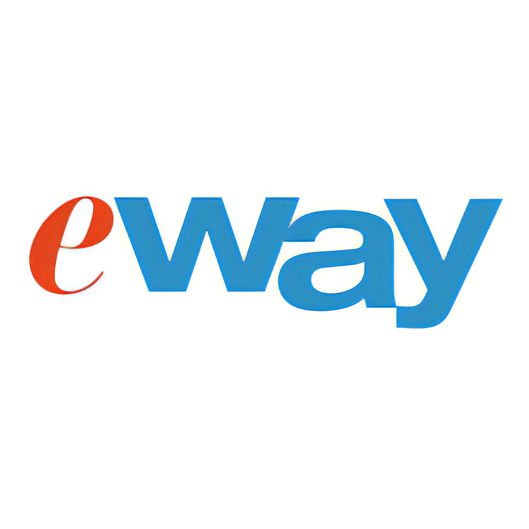

Essere un turista in modo ecosostenibile è di fondamentale importanza per preservare le meraviglie naturali e culturali del luogo che si visita. Un aspetto chiave di un turismo responsabile è l'utilizzo di mezzi di trasporto in sharing, come biciclette, scooter e servizi di car sharing. Questa scelta riduce l'impatto ambientale legato all'uso di veicoli privati e contribuisce alla diminuzione delle emissioni di gas serra e dell'inquinamento atmosferico.
Inoltre, l'uso di mezzi in sharing permette di scoprire le destinazioni in modo più autentico, immergendosi nell'ambiente circostante e godendo di una maggiore flessibilità nei percorsi. In questo modo, si può apprezzare a pieno la bellezza dei luoghi visitati senza comprometterne la sostenibilità, contribuendo alla conservazione dell'ambiente e alla promozione di uno stile di vita ecologicamente consapevole.
Ecco dove poter trovare trasporti in sharing:
Eway sharing è un sito che permette di affittare autoveicoli e scooter elettrici.
l'azienda nasce grazie a Domenico Fini e ha sede a Brescia. Il progetto Eway nasce come proseguimento ideale del programma “100% Urban Green Mobility”. Il Ministero dell’Ambiente e della Tutela del Territorio e del Mare ha assegnato il contributo al progetto “Eway”, classificatosi al 23° posto su un totale di 109 progetti su scala nazionale, che prevede la realizzazione di una rete di car e scooter sharing totalmente elettrici, nata a sostegno del “Programma sperimentale nazionale di mobilità sostenibile casa scuola e casa lavoro”, abbinata ad un'azione di divulgazione e di monitoraggio dell'iniziativa.